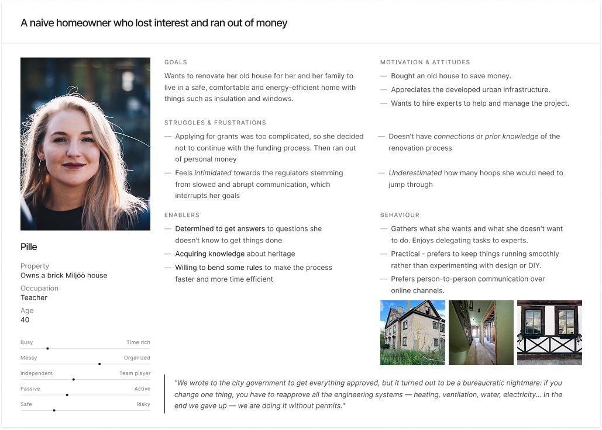
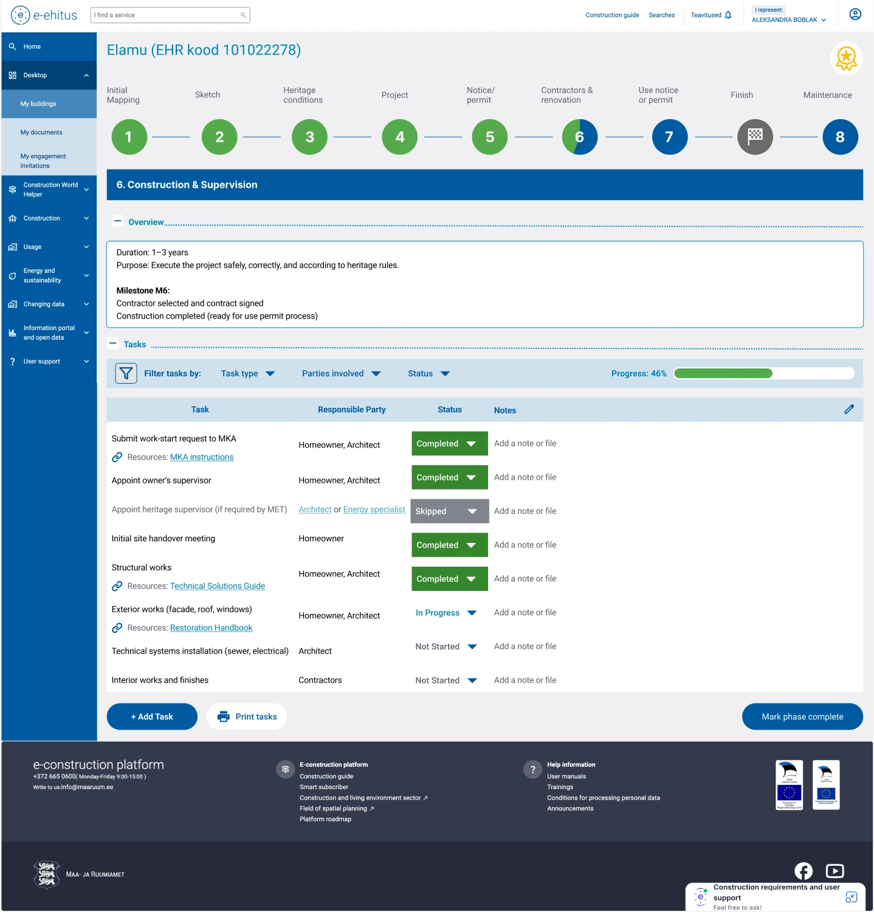
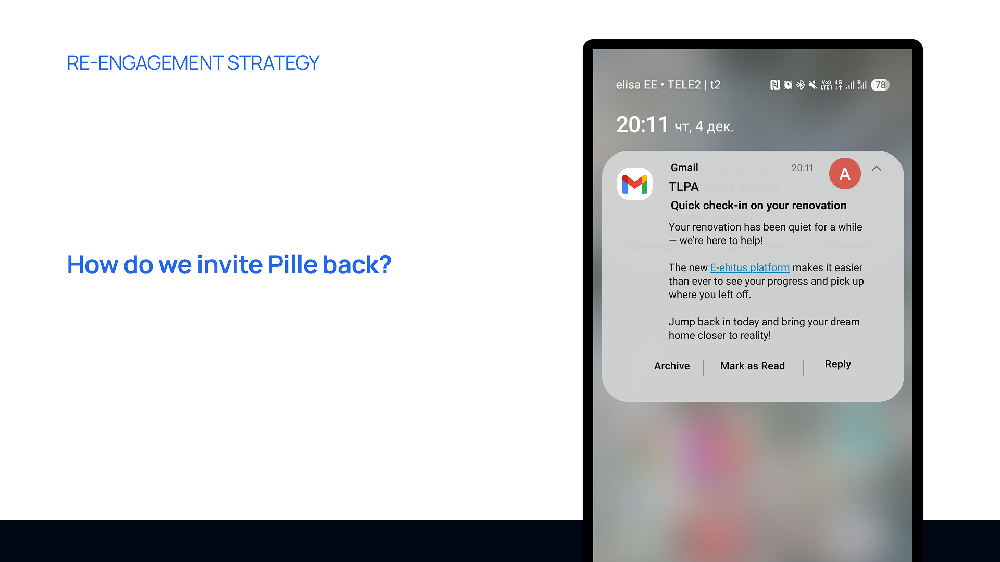

Research
Interviews with homeowners and heritage partners surfaced a recurring pattern — renovation gets paused, resumed, and paused again. Personas mapped the moments where people drop off, and why returning feels so heavy.

02
Making a long and fragmented renovation process easier to return to — helping homeowners keep track of where they left off and what to do next.
CONTEXT
Heritage renovation runs for years. Rules, steps, and paperwork sit in different places, and it is easy to lose the thread — for homeowners and for the agencies supporting them.
GOAL
Give homeowners and partners one place to see where things stand, what happens next, and how to pick up after long pauses — without having to reconstruct the whole story from scratch.
WHAT I DESIGNED
A user re-engagement strategy together with a renovation tracking dashboard — so homeowners can find their way back into a long process and see where they stand at a glance.
Tracking dashboard

Dashboard concept — progress, context, and what to do next.
KEY IDEA
Renovation takes years — the system should remember things for you.
Heritage renovation runs for years. The project began by asking why homeowners drop off partway — and what it would take to help them pick up the thread again.
Interviews with homeowners and heritage partners surfaced a recurring pattern — renovation gets paused, resumed, and paused again. Personas mapped the moments where people drop off, and why returning feels so heavy.

A re-engagement strategy paired with the dashboard — designed to help start-and-stop homeowners regain momentum and stay on track.
